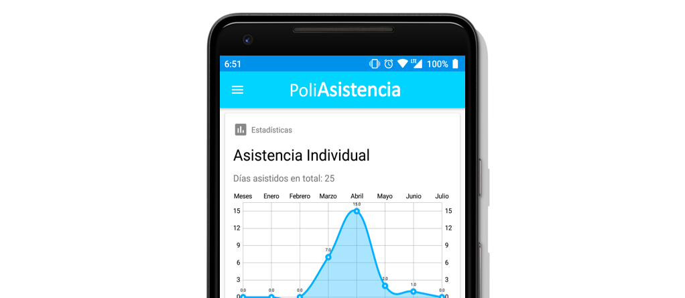

Un proyecto desarrollado por Disoft
¿En qué consiste PoliAsistencia?
Es un software diseñado para el registro y control de la asistencia al plantel tanto de alumnos como de profesores,
que les permitirá ver sus incidencias.
PoliAsitencia también implementa un sistema distribuido para gestión escolar que notifica la entrada y salida del plantel.
Cuenta con una plataforma en Android que les permite ver a los usuarios, horario, calendario de faltas y una pantalla de notificaciones.
Cuenta con una plataforma en Android que les permite ver a los usuarios, horario, calendario de faltas y una pantalla de notificaciones.

¿Para quién fue creado?
PoliAsistencia está dirigido a todos los miembros de la comunidad escolar; fue desarrollado para ser de gran utilidad tanto para profesores,
como estudiantes y demás personal que labora ahí. El software es adaptable a las necesidades de cada usuario y le permita cubrir todas y
cada una de ellas. Podrá visualizar toda la informacion que se le brinda a travez de nuestras distintas plataformas.
¿Cuál es nuestro objetivo?
Tener un programa que le permita a todo nuestros usuarios adaptarse fácilmente a la aplicación, y que a su vez, este se adapte
a todas las necesidades del usuario. Llevar a ti una plataforma que sea de fácil acceso que te muestre tu rendimiento, a través
de gráficos o tablas tanto de forma general como particular.
PoliAsistencia pretende crear un ambiente de estudio donde te sientas más seguro, sabiendo que toda persona dentro del plantel es identifcado por medio de sistemas biometricos en todas las entradas.
PoliAsistencia pretende crear un ambiente de estudio donde te sientas más seguro, sabiendo que toda persona dentro del plantel es identifcado por medio de sistemas biometricos en todas las entradas.

¿Qué cambios nos brinda?
Los actuales sistemas de control de asistencia que manejan las escuelas son obsoletos y tienen grandes fallas de seguridad. PoliAsistencia
es un software innovador que permitira a toda la comunidad ingresar con su huella biometrica, lo que ademas dejara tener un mayor
control respecto a quien entra y sale de las instalaciones. Todas las veces que se pase por el sensor quedaran registradas y se podra ver
por usuario, los dias ausentes o la hora en que suele retirar.